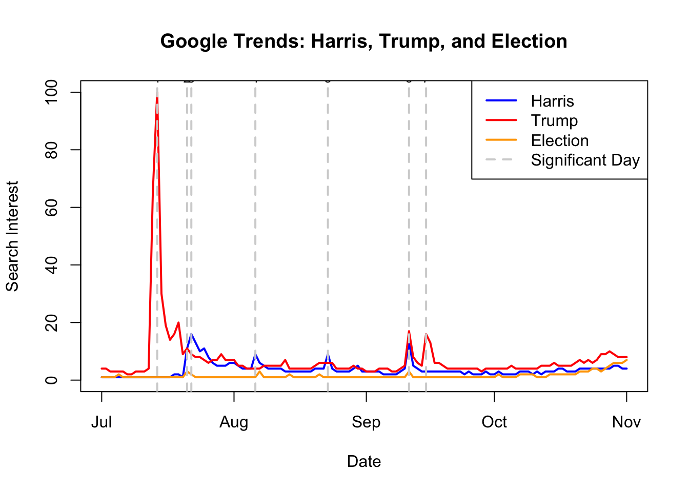

EPPS 6302-Data Collection & Production | Assignment 01
Political Pulse: Unveiling Search Trends in Politics with Google Trends and R
A data-driven exploration of search interest trends for key political figures and events using Google Trends and R.
Google Trends Analysis of Political Search Interest (July–November 2024)
This assignment explores search interest trends for “Trump,” “Harris,” and “Election” using Google Trends data. Two methods were applied:
CSV Data Analysis – Manually downloaded Google Trends CSV data was analyzed for significant date intervals.
API-Based Analysis – The gtrendsR package in R retrieved and visualized real-time trend data.
The study identifies key political events that influenced search volume, visualizing their impact over time. Findings highlight notable spikes in search interest, particularly following candidate announcements, debates, and significant political events leading up to the 2024 U.S. election.
1. Google Trends CSV Data & Analysis
I analyzed Google Trends data for three key terms: “Trump,” “Harris,” and “Election,” covering the date range from July 1, 2024, to November 1, 2024. The data was downloaded as a CSV file to examine the trends and significant date intervals.
Loading the Google Trends CSV Data
The dataset is read into R, and unnecessary rows are removed to clean the data.
# Load the CSV file from google trends with the 3 search termsgoogle_trends_data <-read.csv("/Users/olivermyers/MyWebsite/Trump_Harris_Election_GoogleTrends.csv")google_trends_data <- google_trends_data[-c(1, 2), ]colnames(google_trends_data) <-c("Day", "Trump", "Harris", "Election")google_trends_data$Day <-as.Date(google_trends_data$Day)# print the cleaned datasethead(google_trends_data)
This plot visualizes the search interest over time for Trump, Harris, and Election, with key event dates highlighted.
significant_dates <-as.Date(c("2024-07-14", "2024-07-21", "2024-07-22", "2024-08-06", "2024-08-23", "2024-09-11", "2024-09-15"))date_labels <-1:length(significant_dates)plot(google_trends_data$Day, google_trends_data$Harris, type ="l", col ="blue", lwd =2,xlab ="Date", ylab ="Search Interest", main ="Google Trends: Harris, Trump, and Election",ylim =c(0, 100)) # Set y-axis limits from 0 to 100# Add lines for Trump and Electionlines(google_trends_data$Day, google_trends_data$Trump, col ="red", lwd =2)lines(google_trends_data$Day, google_trends_data$Election, col ="orange", lwd =2)# Add vertical lines and numbers for significant dates, will be listed belowfor (i inseq_along(significant_dates)) {abline(v = significant_dates[i], col ="lightgray", lty =2, lwd =2) # Light gray vertical linestext(significant_dates[i], 100, labels = date_labels[i], col ="black", cex =0.8, pos =3) # Add numbers above the lines}# Adding a legend in the top right cornnerlegend("topright", legend =c("Harris", "Trump", "Election", "Significant Day"),col =c("blue", "red", "orange", "lightgray"), lty =c(1, 1, 1, 2), lwd =c(2, 2, 2, 2))

Figure 1: Google Trends Search Interest Over Time: Search interest for ‘Trump,’ ‘Harris,’ and ‘Election’ from July to November 2024, highlighting key political events influencing search spikes.
Key Political Events and Google Trends Impact
Date
Event Significance
Trend Impact
July 14, 2024
An assassination attempt at a Trump rally draws national attention.
Trump’s Peak: Significant spike in search interest for Trump.
July 21, 2024
Biden exits the race, shifting focus to Kamala Harris.
Surge in searches for Harris.
July 22, 2024
Harris officially announces her candidacy for president.
Harris Surpasses Trump: Harris overtakes Trump in search volume.
August 6, 2024
Harris selects Tim Walz as her running mate.
Harris’s Peak Over Trump: Increased search interest for Harris and Walz.
August 23, 2024
Harris delivers her Democratic National Convention acceptance speech.
Spike in searches as Harris becomes the Democratic front-runner.
September 11, 2024
Trump and Harris attend the 9/11 Memorial, drawing significant media coverage.
Simultaneous Peaks: Interest rises for both candidates.
September 15, 2024
A second assassination attempt on Trump occurs at his golf course.
Trump’s Peak: Major increase in Trump’s search interest.
Election Momentum
As Election Day nears, public interest in candidates and key topics escalates.
Steady growth in searches for Trump, Harris, and Election.
2. Google Trends Using “gtrendsR” PackageUsing
n this method, the gtrendsR package in R was used to directly query Google Trends for real-time search interest data on “Trump,” “Harris,” and “Election.” Instead of manually downloading a CSV, this approach allows for automated data retrieval over a specified time range.
Fetching Data from Google Trends API
This code retrieves real-time Google search interest data directly from Google’s API.
# EPPS 6302: Google Trends data # Sample program for using gtrendsR for collecting Google Trends data# Documentation: vignette("quickstart", package = "gtrendsR")# Website: https://cran.r-project.org/web/packages/gtrendsR/index.html# GitHub: https://github.com/PMassicotte/gtrendsRoptions(repos =c(CRAN ="https://cran.rstudio.com"))## Load library and run gtrendslibrary(gtrendsR)HarrisTrumpElection <-gtrends(c("Trump","Harris","election"), time ="all")## Select data for plottingHarrisTrumpElection_interest <- HarrisTrumpElection$interest_over_time## Plot dataplot(HarrisTrumpElection_interest$hits, type="l")
Warning in xy.coords(x, y, xlabel, ylabel, log): NAs introduced by coercion
Figure 2: Google Trends Data Retrieved via API: Real-time search interest trends retrieved using the gtrendsR package, offering an automated alternative to manual CSV downloads.
Key Advantages
Automated Data Collection → Eliminates the need for manual downloads.
Real-Time Updates → Ensures the latest data can be pulled dynamically.
Reproducibility → Allows future analysis with updated data.
Discussion: Differences between the two methods:
In the first method, data was downloaded directly from the Google Trends website after selecting the key terms and generating the trends. Afterward, the CSV file was downloaded and analyzed separately. In contrast, the second method used R and the gtrendsR package to retrieve and plot the data all in one place.